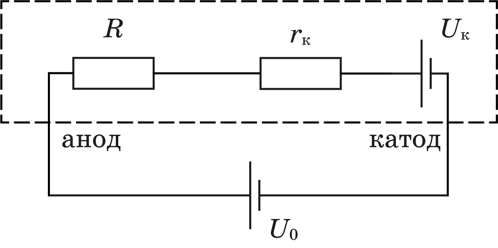
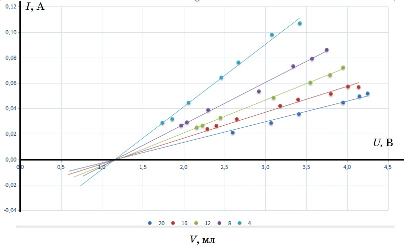
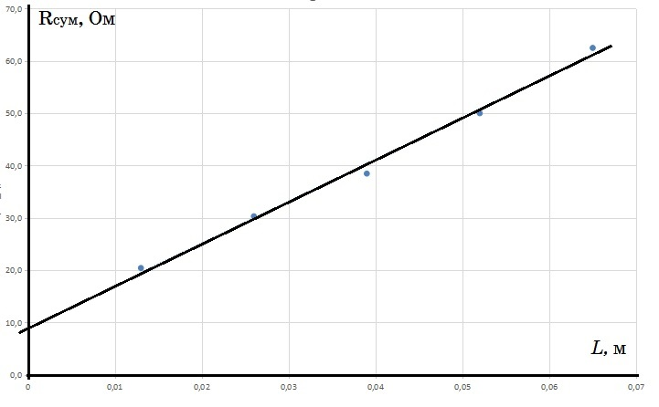

W21 (2021) — English translation
Let's measure the resistance of the limiting resistor $R_1 = 10,1~\mathrm{\Omega}$ with a multimeter in ohmmeter mode.
We assemble a measuring circuit consisting of a battery connected in series, a control unit and a syringe with a salt solution. We connect a voltmeter to the electrodes of the syringe. We connect the second voltmeter in parallel with the reference resistance $R_1$ to measure the current in the circuit.
The entire set of processes on the cathode and anode is proposed to be represented in the form of a series circuit consisting of an external voltage applied to it $U_0$, resistance of the electrolyte volume $R$, contact EMF $U_к$ and contact resistance $r_к$ (Fig. 1). It is assumed that the value $R$ is directly proportional to the resistivity of the electrolyte $\rho$, the distance between the electrodes $L$ and inversely proportional to the cross-sectional area of the electrolytic bath $S$.
The theoretical current-voltage characteristic of the electrolytic bath within the framework of this model has the form \rho $ и $r_k$ .
We take the current-voltage characteristic of the solution. The tables show the results of measuring the current-voltage characteristics of the solution at 5 different volumes of liquid in the syringe $V$ (and the corresponding distances $L$ between the electrodes).
$U_{10}$ , mV $U$, mV $I$, mA $V$, ml $L$, cm 290 1740 28.7 4 1.3 320 1860 31.7 450 2060 44.6 650 2460 64.4 770 2670 76.2 990 3080 98.0 1080 3420 106.9
$U_{10}$ , mV $U$, mV $I$, mA $V$, ml $L$, cm 870 3750 86.1 8 2.6 800 3570 79.2 740 3340 73.3 540 2920 53.5 392 2300 38.8 294 2040 29.1 269 1970 26.6
$U_{10}$ , mV $U$, mV $I$, mA $V$, ml $L$, cm 254 2160 25.1 12 3.9 269 2230 26.6 330 2450 32.7 490 3100 48.5 610 3550 60.4 670 3790 66.3 730 3950 72.3
$U_{10}$ , mV $U$, mV $I$, mA $V$, ml $L$, cm 574 4140 56.8 16 5.2 578 4010 57.2 520 3800 51.5 475 3400 47.0 425 3180 42.1 319 2650 31.6 266 2400 26.3
$U_{10}$ , mV $U$, mV $I$, mA $V$, ml $L$, cm 213 2600 21.1 20 6.5 289 3070 28.6 360 3410 35.6 451 3950 44.7 501 4150 49.6 523 4250 51.8
We build the current-voltage characteristics for all experiments


Using the graph, we determine: 1. From the point of intersection of the graphs and the voltage axis, the value of the contact potential difference $U_к = 1,2~\mathrm{V}$. 2. From the angular coefficient (see formula $(2)$) the resistance of the electrolyte volume together with the resistance of the contact areas $R_{сум}$ for 5 values $L$.
The results of processing experimental data for five values of $L$ are presented in the table and figure.
No. $L$, m $1/R_{сум}$ , 1/Ohm $R_{сум}$ , Ohm 1 0.065 0.016 62.5 2 0.052 0.020 50.0 3 0.039 0.026 38.5 4 0.026 0.033 30.3 5 0.013 0.049 20.4
From the graph we find $r_к = R_{сум}(0) = 9,2~\mathrm{\Omega}$.

Cross-sectional area of the piston $S = 3,1·10^{-4}~\mathrm{m}^2$ (can be found by measuring the diameter of the piston or the ratio of volume to length). Within the framework of the used model $ ΔR_{сум}/ΔL = ρ/S$. From the slope of the straight line $R_{сум}(L)$ we find the resistivity of the salt solution used $ρ = 0,24~ Ом·м$. That is, $σ = 1/ρ = 4,2 ~(Ом·м)^{-1}$.
Specific conductivity of the electrolyte $σ = 1/ρ = q_1n_1µ_1 + q_2n_2µ_2$ where $q_1$ and $q_2$ are the modules of the electrical charges of positive and negative ions, respectively (in the case of sodium and chlorine ions $q_1 = q_2 = е$, where $е$ is the elementary charge), $n_1$ and $n_2$ are their concentrations (in our case they are the same and equal to $n$), $µ_1$ and $µ_2$ are the mobilities of negative and positive ions in solution, which, according to the conditions of the problem, are also equal to each other $µ_1 = µ_2 = µ$. Finally, $$µ=\frac{σ}{2еn}$$
We calculate the concentration of sodium (or chlorine) ions in a three percent solution of table salt $NaCl$ $$n =N/V=\frac{m_{NaCl}N_a\rho_{раств}}{M_{NaCl}m_{раств}}=0,03\frac{N_a\rho_{раств}}{M_{NaCl}}= 3,2·10^{26} ~\mathrm{m}^{-3}$$.
We calculate the mobility: $$µ = \frac{σ}{(2еn)} = 4,0·10^{-8}\frac{м^2}{В·с}$$, which is in good agreement with the literature data.